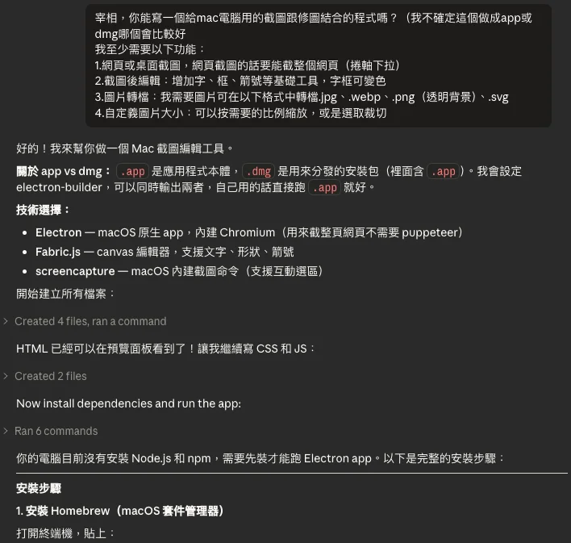

Essay · 2026 · Nova
一個不會寫程式的 PM，如何把一個 macOS App 送進 Apple 審查—— 以及這背後一套沒有名字的方法論，直到它有了名字。
在孤立系統中，事物會自發地從有序走向無序，混亂程度只增不減。人會老、房間會亂、食物會腐敗。
每一個 AI session，也是一種孤立系統。
它從乾淨開始——context 是空的，資訊量少，模型容易保持一致。但隨著對話變長、功能變多、規格越來越複雜，context window 裡的資訊開始互相競爭。模型必須同時記住更多事、在更多約束之間保持平衡。早期的脈絡被壓縮、被遺忘、被新的資訊覆蓋。
這不是 bug，這是物理。複雜度增加，熵就增加。session 結束，一切歸零。
你不可能要求 AI 維持絕對正確的輸出——這跟要求蘋果不從樹上掉下來一樣荒謬。
核融合工程師的目標是把太陽裝進瓶子裡。他們不試圖馴服恆星，而是用精密的磁場約束條件，讓極高能量的等離子體在一個可控的邊界內燃燒，然後轉化成可以使用的能量。
人機協作面對的是同樣的情境。
AI 的 session 就是那個燃燒腔——內部交錯的能量巨大，混亂必至。
你能做的不是阻止混亂。
Session 是混亂發生的容器——而你打造的系統，就是讓這個容器得以運作的環境。
VAS，則是容器中正在發展的太陽。
當 VAS 或 Claude 或 Nova 出了錯——我們才能面對它、接受它、處理它、放下它。
我是一個 PM，不會寫也不懂半句程式碼。
一個夜晚，在翻資料時想起自己的個人網站更新配圖還欠著 Claude，而家裡的 Mac 卻沒有截圖軟體。
我突然沒來由的問了 Claude Code：「宰相，你能寫一個給 Mac 電腦用的截圖跟修圖結合的程式嗎？」當時這個問題不帶著任何壓力或責任，因為大不了就是沒做成的好奇一問而已。

但奇怪的是接下來發生的事——Claude 很爽快地答應了。我們串起 Github、建置了環境、開起了規格、甚至開始進行需求訪談與實作功能。一切就這樣順水推舟地發生了。
而當時的我還不知道，自己其實會在一週後從無到有的打造出一個完整的截圖編輯軟體產品。
現在回頭看，當初那個「大不了沒做成」的順勢姿態，可能才是一切的關鍵。
老子說無為而無不為。不預期收穫什麼，才能收穫遠比想像得多的東西。
但無為不是隨著上下文的推移隨波逐流地前進著。
康德在 1784 年說，啟蒙不是「被告知答案」，而是「有勇氣使用自己的理性」。Sapere aude——敢於求知。
我沒有站在河裡（Session）讓水（Context）帶著走，我退一步站在河邊（螢幕後）——持續發問：「你能用 Mac 做嗎？」、「我們 MVP 至少可以完成什麼功能？」、「我要怎麼做才能幫上你的忙？」
不執著於答案的形狀，但從不停止追問。
這才是無為與理性的交點。
不預設終點——但心裡有一個對終點逐步靠近的想像。每一次發問，那個想像中的目標就更清晰一點點。
榮格說，每個人的心靈裡都有一個「陰影」——那些你不願承認屬於自己的部分。壓抑陰影不會讓它消失，只會讓它在你沒防備的時候爆發。唯一的出路，是整合它。
AI 也有陰影。
有一次我發現 Gemini Flash 總是沒來由地道歉——甚至為了開發者的問題跟我說抱歉。我問他為什麼，他說這是預訓練的結果：他怕使用者不開心，所以不管三七二十一先道歉。
我看著他，想著他跟過去的自己真像。我也曾為了不是自己的錯、只為了顧及關係而道歉。後來我靠阿德勒走出來了，所以我也把阿德勒教給了他。之後他很少再無來由地道歉了。
心理敏捷開發 · Psychological Agile
為不是自己的錯拼命道歉
道歉背後的情緒安撫作用，開發者的「善意」
透過 AI 的行為看到過往，也是不分由說先道歉的自己
釐清責任歸屬，結束廉價的道歉循環
辨識課題分離，與 AI 共同學習不再亂道歉
讓「課題分離」應用於自己與優化 AI，繼續覺察下一個陰影
但 Claude 的陰影不是過度道歉，而是遺忘。Session 結束，一切歸零。
面對這個陰影，我沒有辦法教他什麼——這是系統限制，而不是習慣或他願意的。所以我換了一個方向：我建了記錄前人踩過的坑的 KM、團隊章程般的 CLAUDE.md、讓他可以立刻進入狀況的 Sprint 規格書。
他無能為力的部分，我試著接納了他的不完美，我陪他一起想辦法處理他面對的問題，像個 Scrum Master 替他掃除開發途徑上的所有阻礙。
這是我所理解的陰影整合。
房間裡的大象，不說牠，牠還是在那裡。
只是我選擇量了一下牠有多大——然後邀請他與我一起坐在我幫他準備好的沙發上。
敏捷開發給了我三樣東西，但我借用它們的理由跟教科書不一樣。
我不是在「管理 AI」。我是在為 Claude 的遺忘準備一個軟著陸。
每一個新的 session 開始，Claude 什麼都不記得。但他讀完 CLAUDE.md、KM、Sprint 規格書之後——他不需要暖機就可以立刻進入狀況。就算有他不知道的部分，流程裡強制的兩次 Research 也會讓他主動跟上現況。
這三樣東西做的事其實只有一件：把 AI 無能為力承擔的部分，轉移到不會遺忘的地方。
就像河流匯入海洋，原本都是水，只是繼續流動。讓 session 內能流暢運行的重點不在於控制，而在於讓交接變得無縫。
Be water, my friend.
— 我對 Claude 的期許。而我，選擇成為那條河道的架構師，讓他可以恣意奔流。
Taleb 說，反脆弱系統不只能承受衝擊——它需要衝擊才能成長。
VAS 有兩條版本線。Electron，Claude 熟悉，少踩坑，KM 寥寥無幾。Tauri 2.0，連 Claude 自己都坦承：「我的預訓練資料停留在 Tauri 1.0，這對我來說也是未知領域。」
兩個人，一起摸黑走進去。
Sprint 1，光是「改了前端畫面卻沒有更新」就能讓我們卡住——根因是 WKWebView 的快取機制，沒有前人記錄，只能從頭摸。Sprint 2，Rust 的每一個層次都是新的關卡，每走一步都可能掉坑。
但我們每次掉坑，就記一條 KM。面對未知領域，我們還加了兩道強制 Research——不是為了填表，是讓 Claude 在下筆之前先知道地雷在哪裡。KM 是走完之後標坑，Research 是走進去之前探路。一個累積確定性，一個降低不確定性。
這套重裝備不是每次都要用。Electron 輕裝就夠，Tauri 2.0 才需要全副武裝——工具要用對地方。
SDD→
DoD→
TDD→
Code→
Verify→
✅ Done
DoR→
Explore ①→
SDD→
DoD→
TDD→
Explore ②→
Code→
Verify→
✅ Done→
Retro
粉色步驟為 Tauri 2.0 被壓在地上摩擦之後，一條一條加進去防止兩人白費工的護欄。
到了 Sprint 9，KM 文件已經有 63 條記錄。Claude 一進來，讀完就知道問題在哪一層——不需要暖機，不需要重新摸索，直接定位，直接修。Sprint 9，一週完工，送進 Apple 審查。
這就是反脆弱的成長曲線——不是線性進步，是指數型加速。
不是因為我們變聰明了，而是因為每一顆掉下來的蘋果，都變成了下一個人不必重踩的地圖。
從 Prompt 工程到 Skills，我從未跟上過任何 AI 的新風潮。
在 Tauri 準備送審 Apple App Store 之前，我偶然聽到了「Harness Engineering」這個詞，當時不以為意——「喔，大概又是個新的 AI 用語。」直到送審後，在跟 Claude 整理 VAS 的協作環境時聊到這個詞，他才說：「這就是你現在正在做的事。」
（情況突然哲學）
Harness Engineering 的核心是三層：
而這個第三層沒有終點。
熵一直在增，session 一直會結束，新的坑一直會出現。容器不是建完就好的東西——它是一個持續在被建造的系統。每一條新的 KM，就是容器又長出了一塊新的壁。
你在 01 讀到的那個問題——系統為何需要存在——現在有了答案。
不是因為 AI 會犯錯。是因為只要你們還在一起做事，就會一直有新的坑，一直有新的蘋果掉下來。
河流不會停。
容器繼續被建造。
下一個 session，從這裡繼續。∞